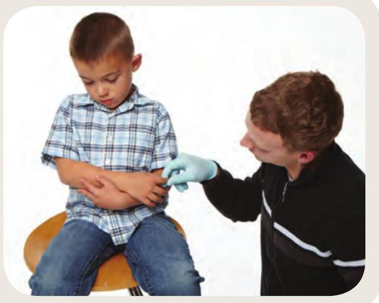
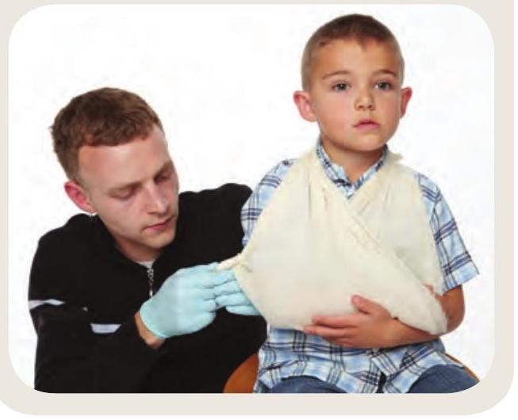
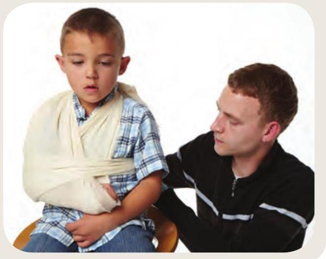
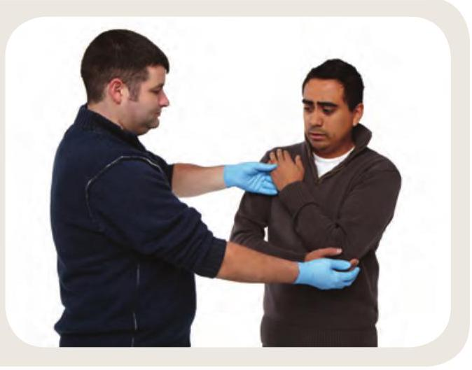
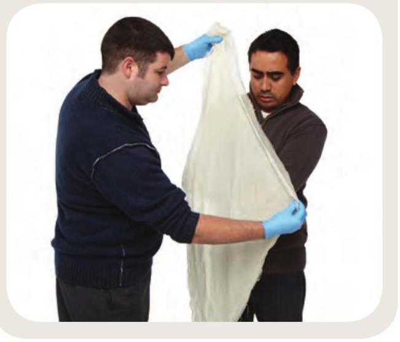
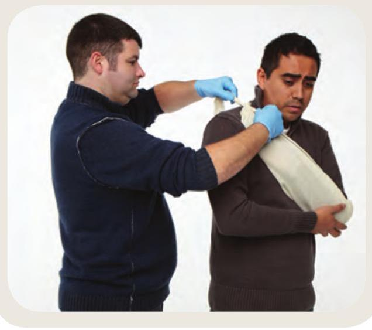
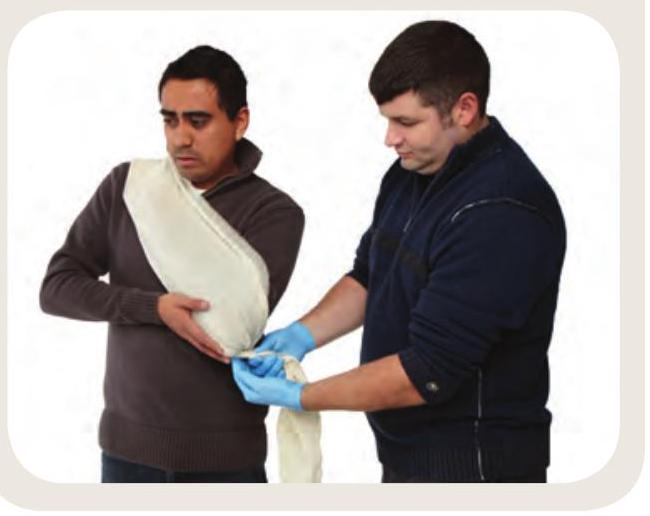
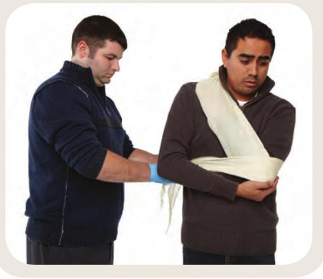

10 Bone, Muscle, and Joint Injuries
There are four basic types of bone, muscle, and joint injuries: strain, sprain, dislocation, and fracture. The first aid for each of these is generally the same.
What to Look For
- Deformity, swelling, or bruising
- Limited or no use of the injured body part
- Bone fragments sticking out of the skin
Call
You should always call EMS/9-1-1 if:
- There are injuries to the thigh bone or pelvis.
- The area below the injury is numb, pale, blue, or cold.
- A broken bone is protruding through the skin.
- You cannot safely move the person.
Care
Treat the injury using the RICE method:
- Rest: Have the person rest comfortably.
- Immobilize: Keep the injured area as still as possible.
- Cool: Cool the injured area for 20 minutes of every hour.
- Elevate: Raise the injury, as long as this does not increase the pain.
Splints and Slings
- Check for normal temperature and skin colour below the injured area before and after immobilizing the limb:
- If the area is cold before immobilizing, call EMS/9-1-1.
- If the area is cold after immobilizing, loosen the splint gently.
- Remove jewellery below the site of the injury.
- Immobilize the injured part in the position in which it was found.
- Make sure a splint is long enough to extend above and below the injury.
- Pad slings and splints.
Regular Sling
- Have the person hold the injured arm across the body. 
- Slide a triangular bandage under the injured arm.
- Bring the bottom end of the bandage over the shoulder of the injured side and tie the ends together behind the neck.
- Secure the elbow by twisting, tying, or pinning the corner of the bandage. 
- Secure the arm to the body with a broad bandage. 
Tube Sling
- Have the person support the arm of the injured side. 
- Place a triangular bandage over the forearm and hand. 
- Tuck the lower edge under the arm and twist the end to secure the elbow. 
- Tie the bandage's ends together. 
- Secure the arm to the body with a broad bandage. 